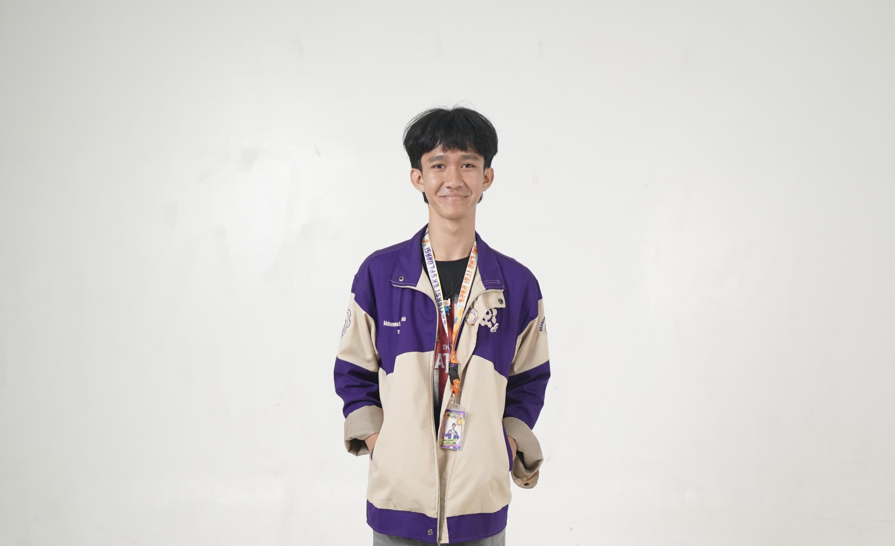

Asah otak Tantang dirimu Raih skor tertinggi
Empat game seru yang siap menguji ketajaman pikiranmu
Isi grid 9×9 dengan angka 1–9 tanpa ada pengulangan di baris, kolom, atau kotak 3×3.
Game klasik dua pemain! Susun tiga simbol sejajar di papan 3×3 untuk menang.
Jatuhkan keping ke kolom dan hubungkan 4 keping sewarna secara horizontal, vertikal, atau diagonal.
Susun kembali potongan angka yang teracak menjadi urutan 1–15 pada grid 4×4.
MindGames adalah platform game edukasi berbasis web yang menyajikan koleksi mini game yang menyenangkan sekaligus melatih kemampuan berpikir logis dan strategis.
Dibuat oleh mahasiswa ITS Surabaya sebagai proyek web statis, MindGames membuktikan bahwa belajar bisa menyenangkan!
Kenali Tim Kami →Logika Konsentrasi Ketelitian
Sudoku adalah permainan teka-teki angka berbasis logika yang dimainkan pada sebuah grid berukuran 9×9. Grid tersebut dibagi menjadi sembilan kotak kecil berukuran 3×3. Sebagian sel sudah terisi angka sebagai petunjuk, dan tugasmu adalah mengisi sel yang kosong.
Nama "Sudoku" berasal dari bahasa Jepang yang merupakan singkatan dari "Sūji wa dokushin ni kagiru", yang berarti "angka harus tunggal." Meski terlihat matematika, Sudoku sebenarnya murni tentang logika—tidak memerlukan operasi aritmatika apapun.
Cikal bakal Sudoku pertama kali muncul di Amerika Serikat pada tahun 1979, dipublikasikan oleh Howard Garns di majalah Dell Pencil Puzzles dengan nama "Number Place." Garns, seorang arsitek dari Indiana, merancang puzzle ini sebagai tantangan logika murni.
Popularitasnya meledak di Jepang pada tahun 1986 ketika perusahaan penerbitan Nikoli mempublikasikannya dengan nama "Sudoku" dan menambahkan aturan bahwa jumlah petunjuk tidak boleh lebih dari 32. Pada tahun 2004, Sudoku menjadi fenomena global setelah diterbitkan di koran-koran Inggris dan menyebar ke seluruh dunia.
Kini Sudoku adalah salah satu puzzle paling populer di dunia, hadir dalam bentuk koran, buku, aplikasi, dan kompetisi internasional.
Klasik Seru Kompetitif
Tic Tac Toe (juga dikenal sebagai Noughts and Crosses atau X's and O's) adalah salah satu permainan strategi paling klasik di dunia. Dimainkan oleh dua pemain pada sebuah grid 3×3, setiap pemain bergantian menandai kotak dengan simbol mereka—biasanya X dan O.
Meski terlihat sederhana, Tic Tac Toe menyimpan kedalaman strategis yang menarik. Pemain yang bergerak optimal tidak akan pernah kalah—sehingga permainan ini sering digunakan sebagai pengantar konsep teori permainan dan kecerdasan buatan.
Akar permainan ini dapat ditelusuri hingga ke Mesir Kuno sekitar tahun 1300 SM, di mana sebuah papan dengan pola tiga-dalam-satu-baris ditemukan. Bangsa Romawi memiliki versi serupa yang disebut "Terni Lapilli" yang dimainkan di forum-forum kota.
Nama "Tick-Tack-Toe" pertama kali muncul dalam bahasa Inggris pada abad ke-19, merujuk pada sebuah permainan pencil yang dimainkan dengan mata tertutup. Versi modern dengan aturan X dan O yang kita kenal hari ini mulai populer di Inggris pada awal abad ke-20.
Pada tahun 1952, OXO menjadi salah satu video game pertama dalam sejarah—sebuah implementasi Tic Tac Toe yang dibuat oleh Alexander Douglas sebagai bagian dari tesisnya di Universitas Cambridge.
Taktik Antisipasi Kemenangan
Connect 4 adalah permainan strategi dua pemain di mana para pemain secara bergantian menjatuhkan keping berwarna ke dalam papan grid vertikal berukuran 7 kolom × 6 baris. Tujuannya adalah menjadi yang pertama menghubungkan empat keping miliknya secara berurutan.
Empat keping tersebut bisa tersusun secara horizontal, vertikal, atau diagonal. Karena kepingan jatuh ke posisi terendah yang kosong di setiap kolom, setiap keputusan memiliki konsekuensi bagi posisi keping selanjutnya—menjadikan setiap langkah sangat bermakna strategis.
Connect 4 diciptakan oleh Howard Wexler dan dipatenkan bersama Ned Strongin pada tahun 1974. Permainan ini pertama kali dipasarkan oleh Milton Bradley (sekarang bagian dari Hasbro) pada bulan Februari 1974 dan langsung meraih kesuksesan besar—terjual lebih dari 2 juta unit dalam setahun pertama.
Dari perspektif matematika, Connect 4 adalah permainan yang "terpecahkan" (solved game). Pada tahun 1988, James Allen dan Victor Allis secara independen membuktikan bahwa pemain pertama yang bermain secara optimal selalu akan menang — asalkan memulai dari kolom tengah.
Connect 4 menjadi salah satu permainan board game terlaris sepanjang masa dan hingga kini tetap populer dalam berbagai format digital maupun fisik.
Sabar Terencana Presisi
Sliding Puzzle (atau puzzle geser) adalah permainan kombinatorial di mana potongan-potongan bernomor ditempatkan secara acak dalam grid berukuran 4×4, dengan satu kotak kosong. Pemain harus menggeser potongan-potongan tersebut satu per satu ke posisi kosong hingga tersusun urut dari angka 1 hingga 15.
Versi paling populer adalah varian 15-puzzle (4×4 grid) yang membutuhkan perencanaan gerakan yang matang. Setiap keputusan geser berdampak pada posisi potongan lainnya, sehingga diperlukan pemikiran beberapa langkah ke depan untuk menyelesaikannya secara efisien.
Sliding Puzzle ditemukan oleh Noyes Palmer Chapman, seorang kepala kantor pos dari Canastota, New York, sekitar tahun 1874. Namun popularitasnya meledak pada tahun 1880 ketika Sam Loyd, seorang ahli puzzle dan master catur terkenal Amerika, mulai mempromosikan puzzle ini secara luas.
Sam Loyd bahkan menawarkan hadiah senilai $1.000 kepada siapapun yang bisa memecahkan versi "impossible" 15-puzzle—di mana posisi tile 14 dan 15 ditukar. Bertahun-tahun kemudian, matematikawan membuktikan bahwa varian tersebut memang mustahil diselesaikan karena berkaitan dengan paritas permutasi.
Hingga kini, sliding puzzle tetap menjadi salah satu teka-teki paling ikonik di dunia dan menjadi subjek penelitian dalam kecerdasan buatan, khususnya untuk algoritma pencarian seperti A* (A-star).
Kenali tim di balik MindGames
MindGames lahir dari sebuah keyakinan sederhana: belajar dan bermain bisa berjalan beriringan. Kami adalah tim mahasiswa Departemen Statistika Bisnis ITS Surabaya yang membangun platform ini sebagai proyek web statis untuk mata kuliah Pemrograman Web.
Melalui kumpulan mini game klasik yang dihadirkan dalam tampilan modern dan menarik, kami berharap MindGames bisa menjadi tempat yang menyenangkan untuk melatih kemampuan berpikir logis, strategis, dan kreatif bagi semua kalangan.
Kelompok 7 · Departemen Statistika Bisnis · ITS Surabaya
NRP 2043241095
KetuaNRP 2043251119
Wakil KetuaNRP 2043251055
Staff
NRP 2043251079
StaffNRP 2043251039
Staff